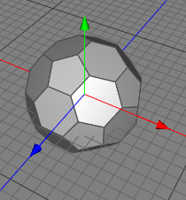

|
Polyhedra ObjectYou can create various types of polyhedra with the polyhedra parametric object, including truncated and normal polyhedra. The truncated icosahedron (see below) can be used as a starting point for a soccer ball for example, or your own R. Buckminster Fuller-inspired architectural designs.  Properties
|